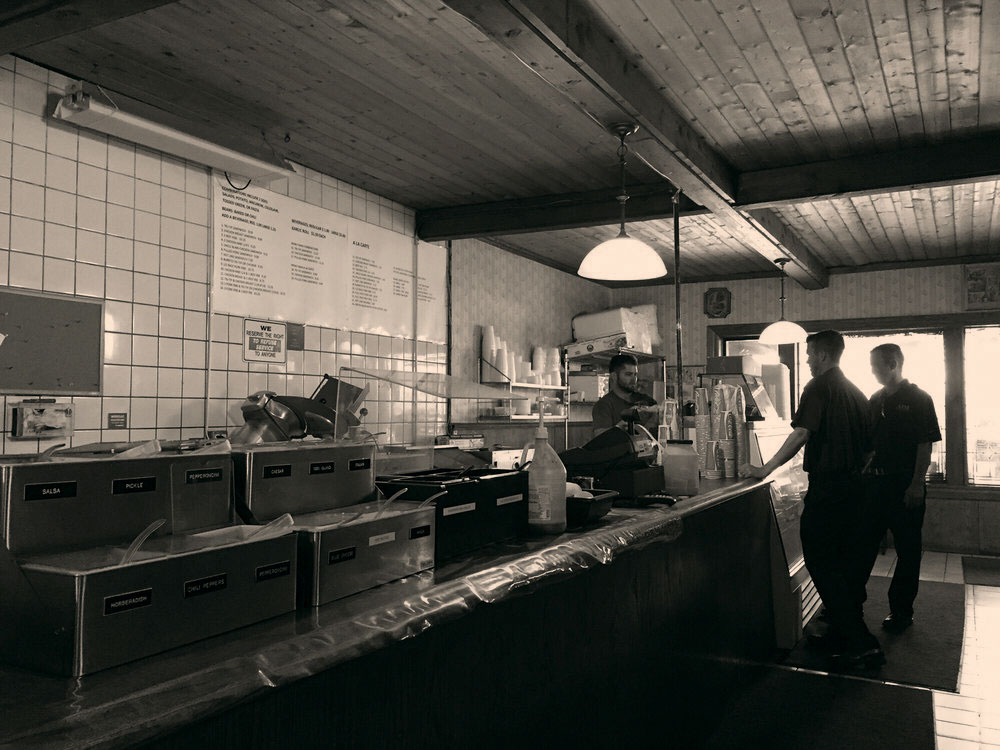

Thousand Oak's original BBQ restaurant — We BBQ 4U since 1957

We BBQ 4U
Proud to be serving the Conejo Valley for over 60 years! The 1000 Oaks Meat Locker is Thousand Oak's original BBQ restaurant. A family-owned business since 1957, it started as a custom butcher shop on Thousand Oaks Blvd.
As the times changed, the Meat Locker transformed into a unique BBQ restaurant. Serving fresh grilled Tri-Tip, Chicken, and Ribs since the mid 1970s, the 1000 Oaks Meat Locker has gained celebrity status.
Specializing in a lunchtime serve, our speedy service is one that will always please. Come try our famous entrées — cooked fresh right in front of the restaurant every day.
What Sets Us Apart
Over 60 years of doing things the right way — here's what that looks like.
Fresh Grilled Daily
Our famous entrées are cooked fresh right in front of the restaurant every single day — you can see and smell your meal being made.
Family Owned
A family business from day one. We started as a custom butcher shop in 1957 and grew into the Conejo Valley's original BBQ restaurant.
Speedy Service
We specialize in the lunchtime serve. Fast, friendly, and never compromising on quality — our speedy service is one that will always please.
Celebrity Status
Serving fresh-grilled Tri-Tip, Chicken, and Ribs since the mid 1970s, the 1000 Oaks Meat Locker has earned celebrity status in the Conejo Valley.
How We Got Here
1957
The 1000 Oaks Meat Locker opens its doors on Thousand Oaks Blvd as a family-owned custom butcher shop, serving the Conejo Valley community.
Mid 1970s
As the times changed, the Meat Locker transformed into a unique BBQ restaurant. Fresh-grilled Tri-Tip, Chicken, and Ribs became the house specialties.
Celebrity Status
Word spread through the Conejo Valley and beyond. The 1000 Oaks Meat Locker earned its reputation as the go-to BBQ spot in Thousand Oaks.
Today
Over 60 years in and still going strong. Same family, same location on Thousand Oaks Blvd, same dedication to fresh BBQ cooked right in front of you every day. We BBQ 4U.
Come See Us
Fresh-grilled Tri-Tip, Chicken, and Ribs cooked right in front of the restaurant every day. Or order delivery through DoorDash.